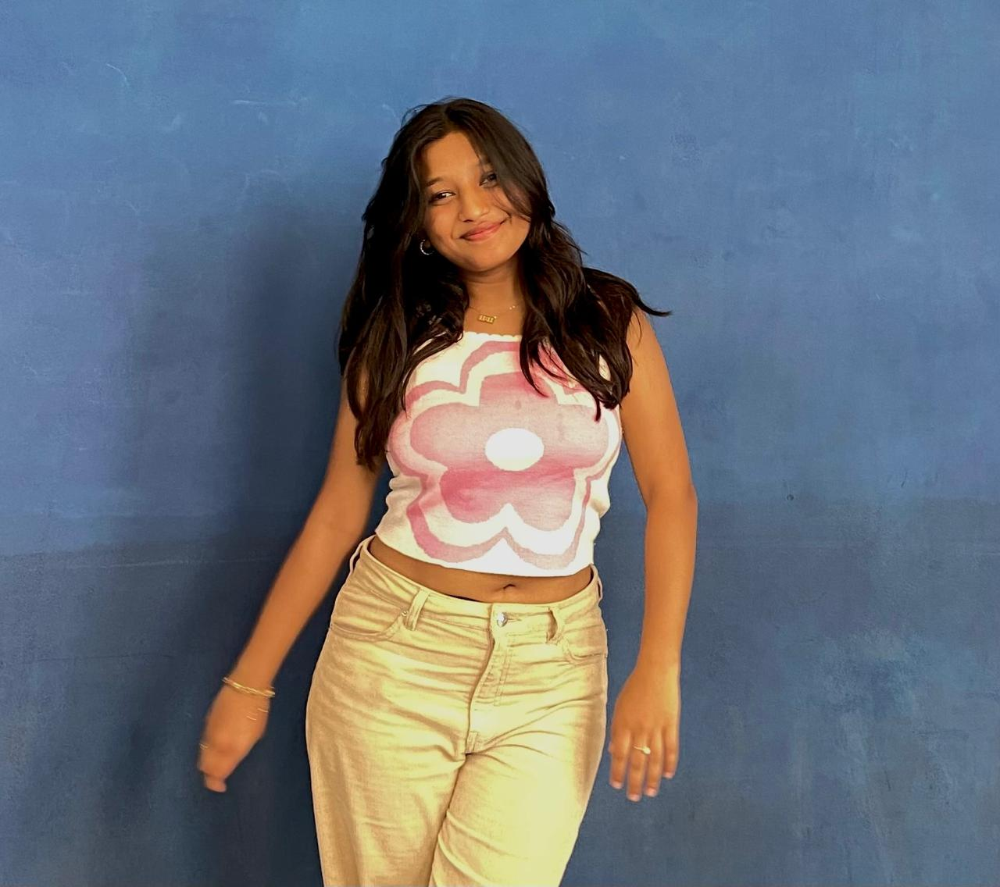

Mahi Vijayvargiya

Summary
Highly motivated and proactive individual with a talent for strategic
communication and outreach, demonstrated through successful college events.
Equipped with exceptional problem-solving abilities and
a rapid learning curvE
Education
- Birla Institute of Science and Technology, Pilani
Chemical Engineering(2023-2027)
- 12th Board=90%
- 10th Board=94.4%
Skills
- Problem Solving
- Marketing and Outreach
- Research Skills
- Project Management and Team Work
- Communication Skills
Experience
TEDx BITSGOA
At TEDxBITSGoa, a prestigious conference where renowned individuals from
various fields inspire students and attendees through their speeches, I played a
key role in ensuring the event's success. I successfully secured sponsorships,
reaching out to potential sponsors through strategic cold emailing and cold
calling. On the event day, I meticulously managed all avenues and deliverables,
ensuring smooth operations and satisfaction among collaborators and speakers.
My efforts contributed to a seamless and impactful experience for everyone
involved.Department of Creative Works, BITS Pilani Goa
Member of this Department which manages multiple events across the 3 fests
of our college which has a budget of minimum 1-2 Cr per fest.
Waves Controls
During the cultural fest Waves at our college, I was an integral part of the Control
Team for one of the flagship events, Mr. and Miss Waves. I contributed to ideating
the entire event, focusing on creative and engaging concepts to attract more
student participation. My role also involved promoting the event extensively,
leveraging various channels to ensure maximum visibility and engagement.
Additionally, I coordinated with actors to serve as judges, enhancing the event's
prestige and appeal.Placement Unit
As a member of the highly exclusive Core Placement Unit at our campus, I have been
deeply involved in the recruitment process, conducting thorough research on
potential companies and understanding their requirements. My responsibilities
include managing the company engagement process, coordinating campus visits,
and ensuring smooth interactions between recruiters and students. My efforts have
been pivotal in facilitating successful placements and strengthening the relationship
between our college and top-tier companies
Languages
Other